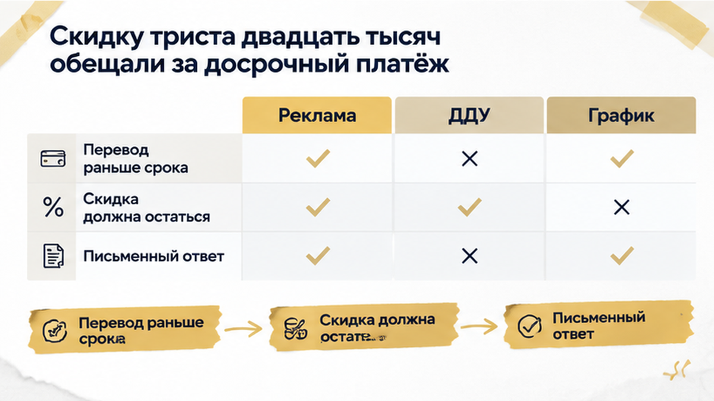
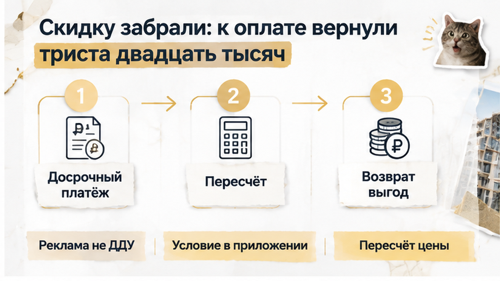
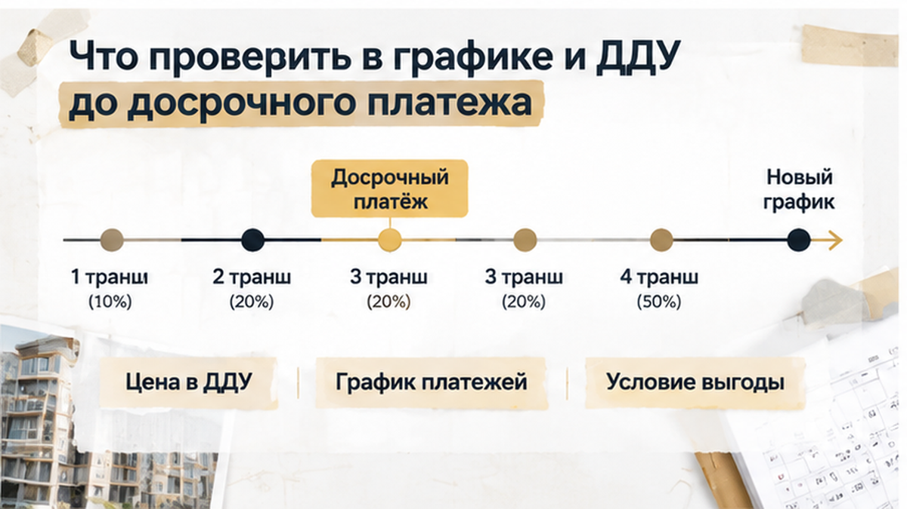
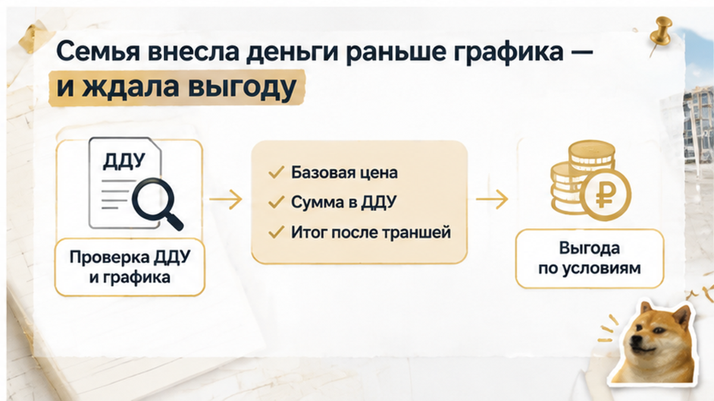

Семья в Тюмени потеряла 320 тысяч рублей после досрочного платежа по рассрочке. За пять–семь дней до финального транша покупателям прислали новый график: сумма выросла ровно на эти 320 тысяч. Менеджер объяснил пересчёт тем, что скидка действовала только при строгом соблюдении графика, а порядок платежей изменился. Семья не подписала дополнительное соглашение и начала проверять переписку, платёжные документы и первоначальный расчёт: деньги уже внесены, а квартира внезапно стала дороже.
Я веду сделки по новостройкам в Тюмени и разбираю такие истории без рекламного шума: где заканчивается обещание менеджера и начинается условие договора. Подключусь до брони, если нужно проверить график и скидку. Подписывайтесь на Telegram The Риэлтор | Тюмень и MAX Святослав Шакин — там подобные изменения в новостройках разбираем ещё до следующего платежа.
Семья выбирала квартиру в новостройке с рассрочкой от застройщика. В расчёте была скидка 320 тысяч рублей — её связывали с крупным досрочным платежом или ранним закрытием остатка. Покупатели сопоставили первоначальный взнос, будущие платежи и остаток и решили внести часть денег раньше установленной даты.
Логика казалась простой: если деньги есть сейчас, почему бы не уменьшить долг раньше? Но скидка могла зависеть не только от суммы перевода, а и от порядка оплаты — от того, сколько заплатили и в какой момент.
В такой сделке рядом существуют несколько документов и обещаний. Реклама показывает акцию, менеджер объясняет условия, график задаёт даты, а цена квартиры фиксируется в ДДУ. По 214-ФЗ изменить цену договора можно по соглашению сторон, если сам договор предусматривает такую возможность, конкретные случаи и условия.
До перевода покупателям нужно было найти письменное основание скидки: в ДДУ, приложении к нему, соглашении о рассрочке или условиях акции. В другой тюменской истории покупатели остановились уже на этапе, когда после одобрения ипотеки не открыли эскроу. Здесь проблема возникла из-за досрочного платежа и его влияния на цену.
Фразы вроде «при строгом соблюдении графика» и «при изменении порядка оплаты цена пересчитывается» звучат технически. Но одна такая строчка может превратить ожидаемую выгоду в дополнительные 320 тысяч рублей.
После нескольких платежей семья внесла часть остатка раньше срока. Покупатели считали, что деньги пойдут в счёт будущего платежа, а скидка останется в силе: они хотели быстрее уменьшить задолженность и выполнить условие, с которым связывали выгоду.

До перевода им стоило получить письменный ответ на один конкретный вопрос: сохраняется ли скидка при таком порядке оплаты? Сообщения «можно внести досрочно» для этого мало. Нужно было зафиксировать, что произойдёт с общей ценой квартиры, к какому платежу отнесут перевод, какой график продолжит действовать и не изменится ли сумма после зачёта.
Покупатель обычно смотрит на ближайший взнос: внёс больше сегодня — меньше останется потом. Но в рассрочке приходится сверять базовую цену, сумму в ДДУ, цену с учётом скидки, даты графика и последствия изменения очередности платежей.
Семья сохранила документы и переписку, однако окончательный ответ получила только перед финальным траншем. До этого было понятно, что досрочно внести деньги можно. Не было понятно другого: сохранится ли после такого перевода обещанная скидка.
Разрешение перечислить деньги раньше не всегда означает согласие сохранить прежнюю стоимость квартиры. Такой вывод должен следовать из документов или быть прямо подтверждён письменно.
За пять–семь дней до последнего крупного платежа семья получила от менеджера новый график. Вместо ожидаемого остатка там стояла сумма на 320 тысяч рублей больше.
Сначала покупатели решили, что это ошибка: до этого они платили по согласованной схеме, а часть остатка внесли раньше срока, рассчитывая сохранить обещанную выгоду. Менеджер объяснил пересчёт иначе: скидка действовала только при строгом соблюдении графика. В переписке появилась формулировка: если изменить порядок оплаты, цена может быть пересчитана.
Но это объясняло позицию компании, а не отвечало на главный вопрос: какая цена зафиксирована в подписанных документах и при каких условиях её можно менять.
Семья подняла первоначальный расчёт, ДДУ, приложение к нему, соглашение о рассрочке и платёжные документы. Нужно было понять, чем считался ранний перевод: досрочным погашением, авансом или платежом по конкретной строке графика. От этого зависело, сохранилась ли скидка и получил ли застройщик основание пересчитать цену.
В 214-ФЗ цена договора указывается в ДДУ. Изменить её можно по соглашению сторон, если сам договор предусматривает такую возможность, конкретные случаи и условия. Поэтому новый лист с цифрами ещё не становился новой ценой квартиры автоматически.
Семья запросила основание пересчёта: где указана базовая цена, в каком документе появилась скидка, к какому платежу она привязана и есть ли прямое условие об отмене выгоды при досрочном переводе.
На финише сделки особенно опасно сверять только последнюю цифру. В Тюмени уже возникали ситуации, когда условия менялись перед следующим шагом — например, застройщик сдвигает сроки, а деньги на эскроу уже заморожены, или банк поднимает ставку накануне подписания ДДУ. Здесь нужно было сопоставить не обещание в переписке, а всю цепочку документов.
В новом расчёте к остатку вернулась вся ранее учтённая выгода. Застройщик не называл это штрафом: по его версии, ранний перевод сбил порядок платежей, поэтому остаток нужно считать по базовой цене.
Для семьи это означало внезапную доплату перед финальным траншем. Бюджет уже собрали по первоначальным условиям, а новая цифра пришла за несколько дней до платежа.
Компания предложила откатить ранний перевод и ждать возврат две–три недели, но без прежней выгоды в графике. Покупатели остановили подписание допсоглашения и запросили первоначальный расчёт, переписку и платёжные поручения.
Разрешение внести деньги раньше срока само по себе ещё не отвечает на вопрос о цене. Нужно проверить, связывает ли договор изменение порядка оплаты с пересмотром выгоды.

Нельзя заранее объявить требование застройщика законным или незаконным без документов. Если скидка прямо включена в ДДУ или приложение, а условие её сохранения сформулировано ясно, позиция компании будет одной. Если же выгода осталась только в рекламе и переписке, а подписанные документы не дают понятного основания для отмены, у покупателей появляются другие аргументы.
Доплата здесь — не штраф и не неустойка. Это возвращённая в цену выгода: её сначала учли в расчёте, а потом сняли из‑за порядка платежей. Неустойка по части 6 статьи 5 214-ФЗ относится к просрочке, а не к такому пересчёту.
Условие выгоды лучше читать до брони и до крупного перевода — не на финише, когда транш уже на подходе.

Перед крупным переводом нужно сверить не только рекламную цену и слова менеджера, но и цену в ДДУ, график рассрочки, условия акции и переписку.
| Что проверить | Какой вопрос задать | Почему это важно |
|---|---|---|
| Цена договора | Какая сумма указана в ДДУ и совпадает ли она с расчётом? | Рекламная скидка может отличаться от цены подписанного договора. |
| График рассрочки | Есть ли точные даты и размеры платежей? | Досрочный перевод меняет согласованный порядок оплаты. |
| Условие выгоды | Есть ли отмена при смене порядка оплаты или только при просрочке? | Одна строка в приложении может перевернуть весь расчёт. |
| Досрочная оплата | Разрешён ли ранний перевод без пересмотра цены? | «Можно внести раньше» и «цена не меняется» — разные обещания. |
| Зачёт платежа | Как в графике назван перевод: аванс, транш или досрочное погашение? | Назначение суммы лучше зафиксировать письменно до перевода. |
Пункт читают целиком: к каким датам он привязан и чем подтверждается. Сверьте базовую цену, сумму в ДДУ и итог после всех траншей.
До перевода попросите письменный ответ уполномоченного представителя: сумма, назначение, остаток после зачёта и сохранится ли выгода. Сохраните график, платёжку и переписку.
Если после оплаты прислали новый график с большей общей суммой, запросите письменное основание и сравнение расчётов. Не подписывайте документ с новой ценой, пока не понятно, какой пункт изменился. В другой ситуации покупатели также остановились перед следующим шагом, когда им прислали новый ДДУ: новый договор нельзя принимать автоматически только потому, что его прислали перед подписанием.
Вывод для себя простой: итоговую цену и пункт о выгоде сверяют до брони и до крупного перевода — тогда не приходится торговаться с графиком в последние дни перед траншем. Семья ушла смотреть другой корпус с чистым расчётом в руках.
Если обещали выгоду за ранний платёж, а на финише вынесли доплату — вы бы согласились или разорвали сделку, даже когда объект уже «ваш на бумаге»?

Если берёте новостройку в Тюмени в рассрочку, отправьте вопрос до перевода крупной суммы. В Telegram The Риэлтор и MAX Святослав Шакин можно разобрать график, скидку и условия ДДУ простым языком.